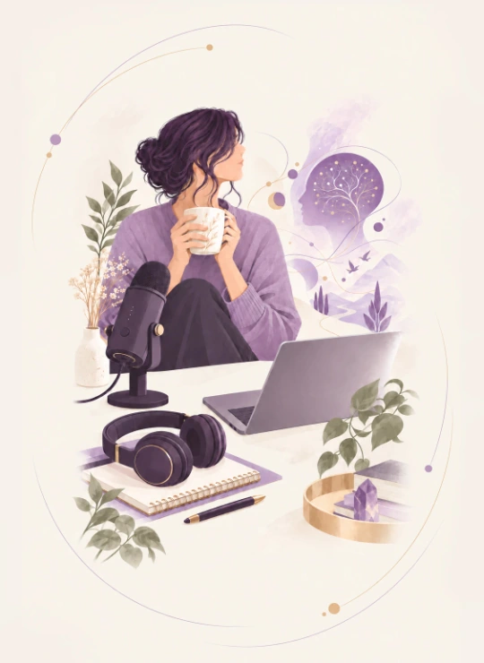
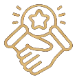

Mes bilans HPI-THPI
Une approche sans test de QI, centrée sur vos besoins et vos solutions.
Le bilan HPI personnalisé s'adresse aux adultes souhaitant mieux comprendre leur fonctionnement sans recourir à un test de QI.
Découvrir les bilans →HPI Talents
BY AFM DÉVELOPPEMENT · DEPUIS 2005
1er site francophone consacré aux adultes surdoués et aux adultes surdoués dans les organisations. Depuis plus de vingt ans, HPI Talents œuvre pour la reconnaissance, la valorisation et l’accompagnement de la neurodiversité.


Comprendre la douance
La douance, les surdoués, les HPI (Hauts Potentiels Intellectuels), les THPI, les HQI (Hauts Quotients Intellectuels) et les THQI... Les termes sont nombreux, que malheureusement beaucoup de gens confondent et/ou ignorent. Mais de quoi parlons-nous exactement ?
Ici, la cartographie officielle qui ne sait pas repérer les HPI/THPI atypiques :
Les QI supérieurs à 145 ne représenteraient qu'1/1 000 de la population et ceux supérieurs à 160 environ 1/30 000. Et bien évidemment, il existe des personnes au-delà de ces graduations.
Approfondir la douanceMes bilans HPI-THPI
Le bilan HPI personnalisé s'adresse aux adultes souhaitant mieux comprendre leur fonctionnement sans recourir à un test de QI.
Découvrir les bilans →Formations
Des formations pour particuliers et professionnels, proposées en présentiel, distanciel, e-learning et formats hybrides.
Des programmes pour mieux comprendre et accompagner les profils à haut potentiel et atypiques.
Découvrir →Des parcours destinés notamment aux psychologues, médecins, coachs, enseignants et professionnels de l'accompagnement.
Voir les parcours →Une formation approfondie dédiée à l'accompagnement des hauts potentiels et aux outils adaptés aux environnements complexes.
En savoir plus →
10 000AccompagnementsConférences
Lives, conférences, interviews et contenus de formation autour du HPI, de la douance et de l'accompagnement.
Un format de réponses atypiques en direct, avec des replays accessibles sur YouTube.
Voir les conférences →Coaching HPI, orientation solutions et compétences dans un parcours de formation approfondi.
Découvrir →Des interviews et échanges vidéo consacrés aux profils atypiques et à la neurodiversité.
Accéder aux médias →Un contenu consacré à la douance féminine et aux singularités des femmes à haut potentiel.
En savoir plus →Livre
Retrouvez les publications et ouvrages associés à HPI Talents et Fabrice Micheau.
Découvrir les livresRéseaux
Actualités
Quelques sujets mis en avant actuellement par HPI Talents.
Certifications
La certification qualité Qualiopi couvre les catégories d'actions de formation et de bilans de compétences.
Contactez HPI Talents pour identifier le format d'accompagnement, de bilan ou de formation adapté à votre situation.